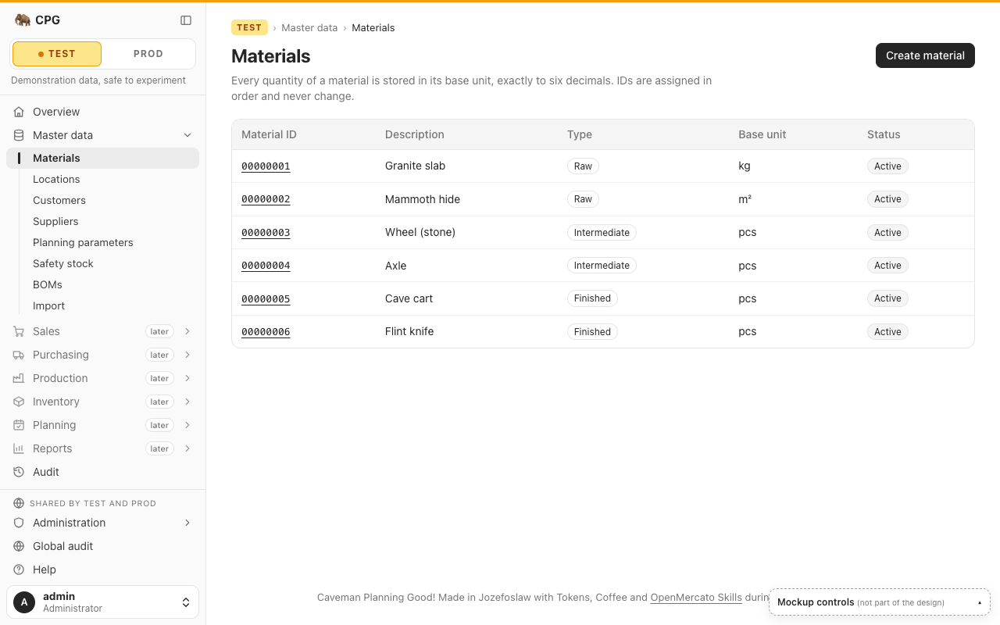
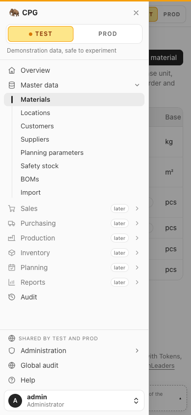

01Sidebar tree
The familiar ERP layout. A full-width TEST | PROD switch heads the sidebar. Everything tenant-scoped sits under it: Overview, the master-data tree (expanded), greyed later groups, Audit. Everything global is pinned below a "Shared by Test and Prod" caption. Collapses to an icon rail; a drawer on mobile.
- Every existing screen visible and 1 click away
- The split between tenant and global screens is visible at a glance
- Always costs 264 px of width; tight on height once the later slices exist
- On mobile everything is behind the Menu button